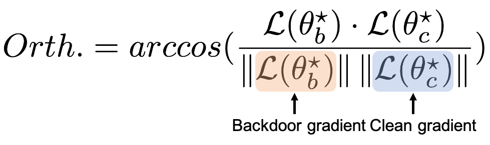

Orthogonality (Orth.)
For Orthogonality, we measure the angle between the benign and backdoor gradients. This metric quantifies the radians, providing a clear indication of how distinct the backdoor behavior is from normal operations. The formula we use, which involves the arc cosine of the dot product normalized by the magnitudes of these gradients, is detailed in our paper.
